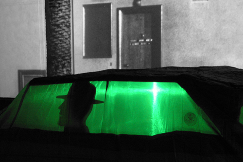

1 YEAR LATER is a multi-media installation conflating Robert Frank’s “Covered Car, Long Beach, CA,” Johnny Cash and Men in Black.
This project originated from a parking shortage on the Los Angeles street where artist team, Denise and Scott Davis live. In trying to preserve a parking space to return home to each day, they came up with the idea of a collapsible covered car and for inspiration, turned to Robert Frank’s 1956 photograph to create this decoy. Research into late 50’s Cadillacs led to some of the iconic figures of the time: Men in Black, who drove them; then to Johnny Cash,who drove them, sang about them and was popularly known as the Man in Black.
For this bold installation, a one-to-one scale representation of Frank’s photograph, Davis & Davis jump “one year later” in time to inhabit the scene with these characters. A 1957 model Cadillac decoy is parked and three Men in Black sit within literally undercover, but their logo, the all-seeing eye, is visible in the driver’s side rear window. They are whispering along robotically to Cash’s 1957 release, “Cry, Cry, Cry” , the lyrics to which speak of surveillance, interrogation and threat, hallmarks of Cold War domestic intelligence operations.
This collage of time, space and representational mediums creates a filmic transformation of the original starting point, this 50’s photographic scene, with an uncanny contemporary reflection.
Exhibited at TELIC in collaboration with The Center for Integrated Media at the California Institute for the Arts.